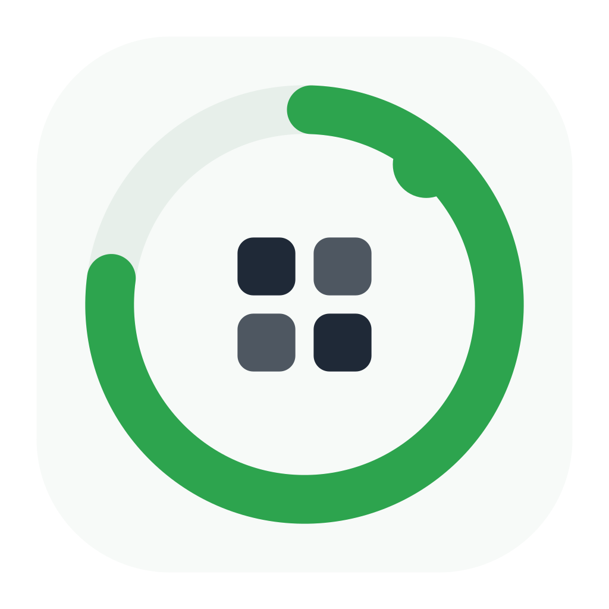
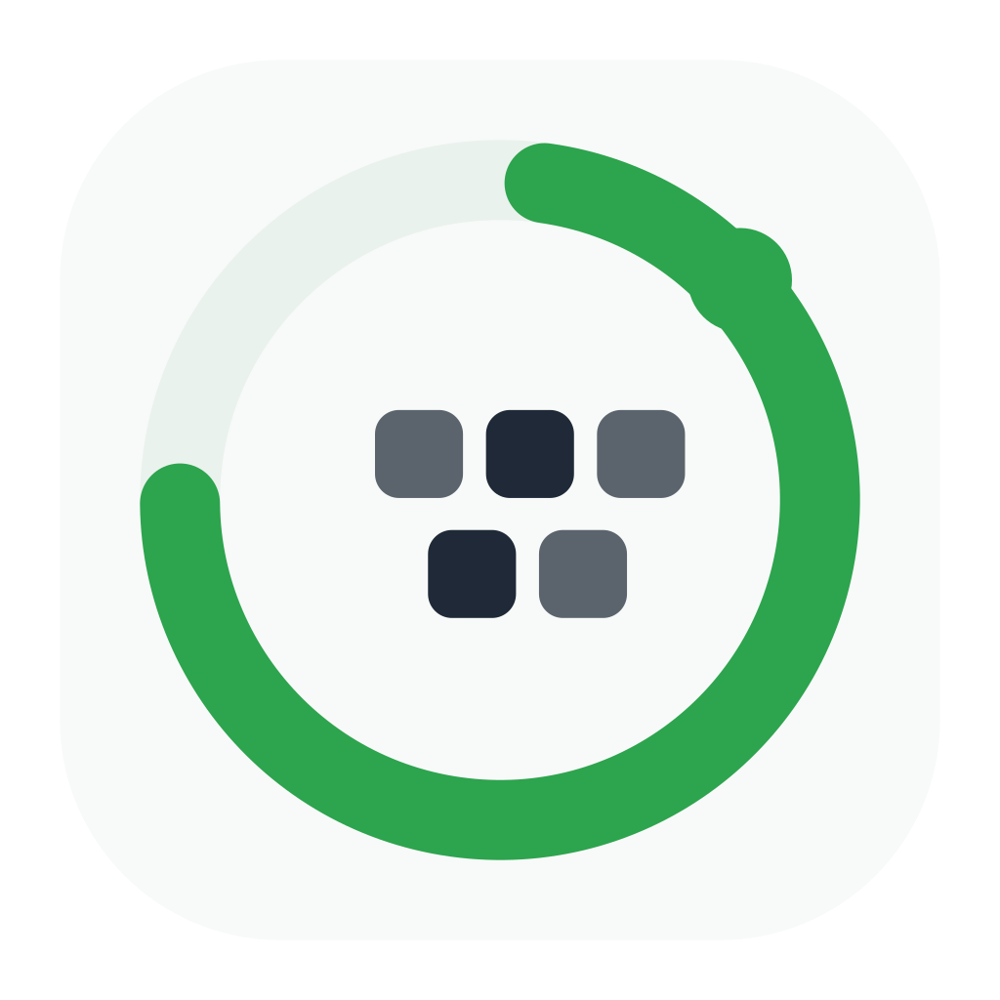
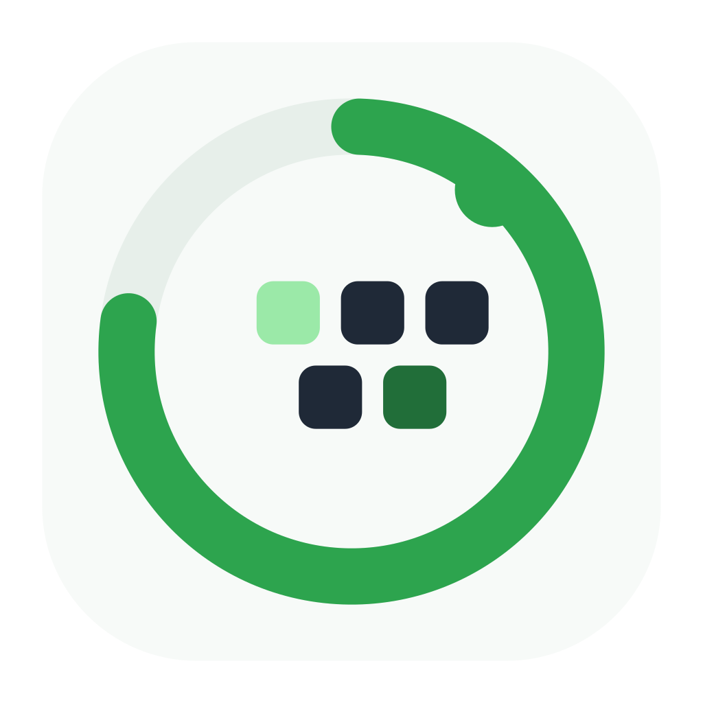

01 Balanced Orbit
Closest to figure 1, but reduced to a cleaner 2x2 token core.
SVGFive solid-color refinements of the green progress orbit direction. The aim is less visual noise, stronger small-size silhouette, and a more intentional relationship between the ring, endpoint, and token core.

Closest to figure 1, but reduced to a cleaner 2x2 token core.
SVG
Endpoint reads as part of the progress system, not a loose dot.
SVGMost compact option for tiny menu-bar or favicon contexts.
SVGMore ownable: one token core instead of a generic grid.
SVG
Keeps the grid language, but adds a single green token accent.
SVG